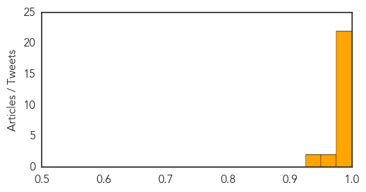
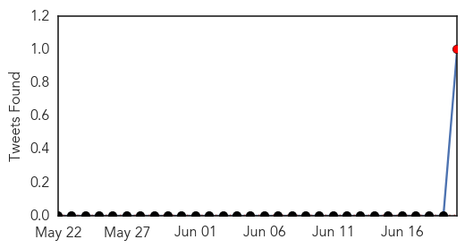

Chikungunya
30-Day Web Trend
13 alerts, 1 warnings

30-Day Twitter Trend
0 alerts, 0 warnings

Article Locations
Article Confidences
Top Articles:
- 0.999
- Oklahoma reports first chikungunya case in Tulsa County resident
- 0.999
- Dominican Republic accounts for 47 percent of chikungunya cases in the Caribbean
- 0.999
- First case of chikungunya confirmed In Georgia
- 0.999
- Mosquito-borne chikungunya virus plaguing Caribbean may be headed for U.S.
- 0.999
- Florida, Georgia report cases of Chikungunya virus: Here's what you can do to protect yourself
- 0.998
- First case of mosquito-borne disease confirmed in Georgia
- 0.998
- First Oklahoma case of chikungunya confirmed in traveler
- 0.996
- Carribbean and Central America Threatened by Chikungunya Virus
- 0.994
- New virus slams Caribbean, threatens Florida
- 0.994
- Health Officials Confirm Two Cases of Chikungunya Fever
- 0.993
- Mississippi investigates possible chikungunya virus case
- 0.992
- Several Cases of a Mosquito Borne Virus Found in Virginia
- 0.992
- Haiti records nearly 40,000 chikungunya cases, triple PAHO's report a week ago
- 0.992
- New Mosquito-Borne Disease Chikungunya Hits GA
- 0.991
- Caring for a chikungunya patient
- 0.988
- Chikungunya case confirmed in Tulsa County
- 0.987
- Health official says Jamaica prepared to deal with chikungunya outbreak
- 0.986
- Oklahoma Has Its First Case of Chikungunya
- 0.986
- African Viral Disease Spreads
- 0.984
- Health Officials Monitoring Spread Of Rare Mosquito Borne Virus Chikungunya « D Healthcare Daily
- 0.981
- First Oklahoma Case Of Chikungunya Virus Confirmed
- 0.979
- First Oklahoma case of chikungunya virus confirmed
- 0.971
- Church group taking precautions as they head to Haiti
- 0.954
- Arizona at risk for new mosquito virus
- 0.949
- Chikungunya Virus Has Spread To US
- 0.945
- Haiti chikungunya case count nears 40,000
Top Tweets:
-
No tweets found for Jun 20, 2014
Dengue Fever
30-Day Web Trend
1 alerts, 0 warnings

30-Day Twitter Trend
1 alerts, 0 warnings

Article Locations

Article Confidences

Top Articles:
Top Tweets:
- 0.905
- “@HUMNEWS: “@nprGlobalHealth: Dengue fever outbreak in Sudan, not MERS, @WHO says http://t.co/tcc37Gyd3G ht” @DOAWAYWDENGUE”